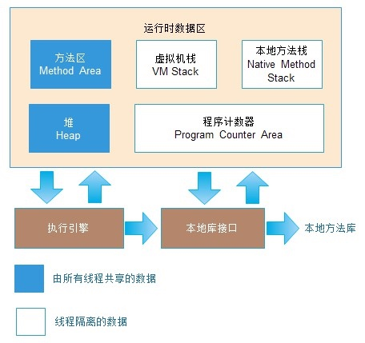
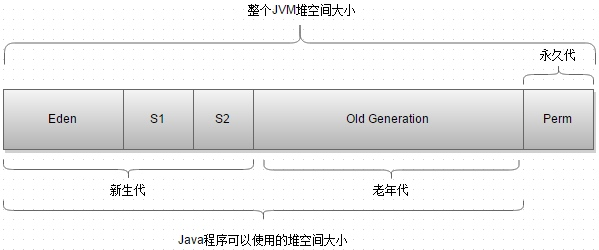

本文从 JVM 结构入手，介绍了 Java 内存管理、对象创建、常量池等基础知识，对面试中 JVM 相关的基础题目进行了讲解。
基本问题
- 介绍下Java内存区域（运行时数据区）
- Java对象的创建过程（五步，建议能默写出来并且要知道每一步虚拟机做了什么）
- 对象的访问定位的两种方式（句柄和直接指针两种方式）
拓展问题
- String类和常量池
- 8种基本类型的包装类和常量池
概述
对于Java程序员来说，在虚拟机自动内存管理机制下，不再需要像C++程序员这样为每一个new操作去写对应的delete/free操作，不容易出现内存泄漏和内存溢出问题，正是因为Java程序员把内存控制权交给了Java虚拟机，一旦出现内存泄漏和溢出方面的问题，如果不了解虚拟机是怎样使用内存的，那么排查错误将会是一个非常艰巨的任务。
运行时数据区
Java虚拟机在执行Java程序的过程中会把它管理的内存分成若干个不同的数据区域。

线程私有的：程序计数器，虚拟机栈，本地方法栈
线程共享的：堆，方法区，直接内存
程序计数器
程序计数器是一块较小的内存空间，可以看做是当前线程所执行的字节码的行号指示器。字节码解释器工作时通过改变这个计数器来选择去下一条需要执行的字节码指令，分支，循环，跳转，异常处理，线程恢复等功能都需要依赖这个计数器来完成。
另外，为了线程切换后能恢复到正确的执行位置，每条线程都需要有一个独立的程序计数器，各线程之间计数器互不影响，独立存储，我们称这类内存区域为“线程私有”的内存。
从上面的介绍中我们知道程序计数器主要有两个作用:
- 字节码解释器通过改变程序计数器来一次读取指令，从而实现代码的流程控制，如顺序执行，选择，循环，异常处理
- 在多线程的情况下，程序计数器用于记录当前线程执行的位置，从而当线程被切换回来的时候能够知道该线程上次运行到哪儿了
注意：程序计数器是唯一不会出现OutOfMemoryError的内存区域，它的生命周期随着线程的创建而创建，随着线程的结束而死亡。
Java虚拟机栈
与程序计数器一样，Java虚拟机栈也是线程私有的，它的生命周期和线程相同，描述的是Java方法执行的内存模型。
Java内存可以粗糙的区分为堆内存(Heap)和栈内存(Stack)，其中栈就是现在说的虚拟机栈，或者说是虚拟机栈中局部变量表部分。（实际上，Java虚拟机栈是由一个个栈帧组成，而每个栈帧中都拥有局部变量表，操作数栈，动态链接，方法出口信息）
局部变量表主要存放可编译器可知的各种数据类型(boolean, byte, char, short, int, float, long, double)，对象引用（refrence类型，它不同于对象本身，可能是一个指向对象起始地址的引用指针，也可能是指向一个代表对象的句柄或其他与此对象相关的位置）。
Java虚拟机栈会出现两种异常: StackOverFlowError 和 OutOfMemoryError。
- StackOverFlowEror：若Java虚拟机栈的内存大小不允许动态扩展，那么当线程请求栈的深度超过当前Java虚拟机栈的最大深度的时候，就抛出StackOverFlowError异常。
- OutOfMemoryError: 若Java虚拟机栈的内存大小允许动态扩展，且当线程请求栈时内存用完了，无法再动态扩展了，此时抛出OutOfMemoryError异常。
Java虚拟机栈也是线程私有的，每个线程都有各自的Java虚拟栈，而且随着线程的创建而创建，随着线程的死亡而死亡。
本地方法栈
和虚拟机栈发挥的作用非常相似，区别是：虚拟机栈为虚拟机执行Java方法（也就是字节码）服务，而本地方法栈则为虚拟机使用到的Native方法服务。在HotSpot虚拟机中和Java虚拟机栈合二为一。
本地方法被执行的时候，在本地方法栈会创建一个栈桢，用于存放该本地方法的局部变量表，操作数栈，动态链接，出口信息。
方法执行完毕后相应的栈桢也会出栈并释放内存空间，也会出现StackOverFlowError和OutOfMemoryError两种异常。
堆
Java虚拟机所管理的内存中最大的一块，Java堆使所有线程共享的一块内存区域，在虚拟机启动时创建。此内存区域的唯一目的就是存放对象实例。几乎所有的对象实例以及数组都在这里分配内存。
Java堆是垃圾收集管理器管理的主要区域，因此也被称为GC堆(Garbage Collected Heap)。从垃圾回收的角度，由于现在收集器基本采用的分代垃圾收集算法，所以Java堆还可以细分为: 新生代和老年代，再细致一点: Eden空间，From Survivor, To Survivor空间等。进一步划分的目的是更好的回收内存，或者更快的分配内存。

在JDK1.8中移除了整个永久代，取而代之的是一个叫元空间(Metaspace)的区域（永久代使用的是JVM的堆内存空间，而元空间使用的是物理内存，直接受到本机的物理内存限制）。
【参考】Java8内存模型--永久代(PermGen)和元空间(Metaspace)
方法区
方法区与Java堆一样，是各个线程共享的内存区域，它用于存储已被虚拟机加载的类信息，常量，静态变量，即时编译器编译后的代码等数据。虽然Java虚拟机规范把方法区描述为堆的一个逻辑部分，但是他却有一个别名叫做 Non-Heap（非堆），目的应该是与 Java堆区分开来。